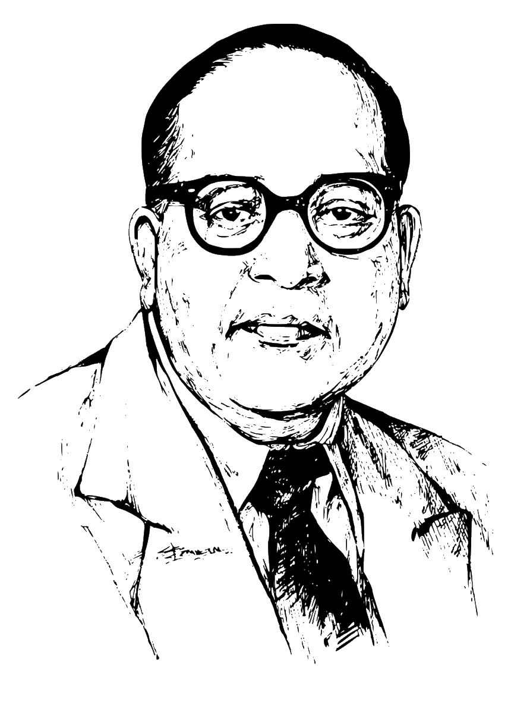

April 14, 1891 - December 6, 1956
“We must stand on our own feet and fight as best as we can for our rights. So carry on your agitation and organize your forces. Power and prestige will come to you through struggle”

When Bhimrao Ambedkar was born to a poor Dalit father Ramji Maloji Sakpal and mother Bhimabai in a small Mhow village of Madhya Pradesh, nobody knew that he would grow up to be a great leader. Every year, his birth date, 14th April 1891, is celebrated as Ambedkar Jayanti in India. Though he hailed from a socially backward class and faced discrimination at every stage of his life, it never stopped him from becoming one of the greatest scholars of all time. Moreover, his childhood was a series of struggles to fight prejudice for being Untouchables or Dalits. His teachers and the other upper caste students would not allow Ambedkar to sit near them. He was not allowed to touch the earthen pot to drink water. Yet, he was not discouraged and continued to excel in academics. After attaining his degree from the Elphinstone College, Bombay, he obtained his postgraduate degree from the London School of Economics. He further continued his doctorate in political science and economics from the University of Columbia, USA. He was a social activist, economist, reformer, and politician. He held the post of the first law minister of our Independent India. In 1956, he became a Buddhist follower. 6th December is mourned as his death anniversary. In 1990, he was conferred with Bharat Ratna for his contribution to India.
They cannot make history who forget history
Be Educated, Be Organised and Be Agitated
I like the religion that teaches liberty, equality and fraternity
Life should be great rather than long
If I find the constitution being misused, I shall be the first to burn it.
Cultivation of mind should be the ultimate aim of human existence
The history of India is nothing but a history of a mortal conflict between Buddhism and Brahminism
I measure the progress of a community by the degree of progress which women have achieved.
Men are mortal. So are ideas. An idea needs propagation as much as a plant needs watering. Otherwise both will wither and die.
Every man who repeats the dogma of Mill that one country is no fit to rule another country must admit that one class is not fit to rule another class.